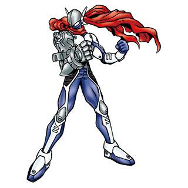
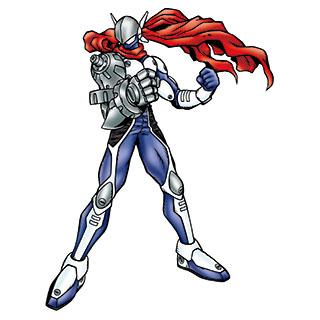

正义兽 Justimon

 

基本资料
| 等级 | 究极体 |
|---|---|
| 类型 | 改造型 |
| 属性 | 疫苗 |
| 所属 | |
| 适应领域 | ME、VB、WG |
| 首次登场 | 2001年12月 数码怪兽卡片游戏（Bo-614） |
| 名字来源 | 英语【Justice】正义 |
必杀技＆得意技
| 正义飞踢 | Justice Kick | ジャスティスキック |
| 三位一体武装 | Trinity Arm [1] | トリニティアーム |
设定资料
正义的英雄型数码兽，佩戴拖着很长的红色围巾。正义感强，绝对不会放过不正当行为和恶行，是幼年期数码兽们仰慕的对象。如风一样前来，挥下正义的铁锤，再如风一样离开。另外，好像喜欢在悬崖上向夕阳摆出招牌姿势。背后装备的「拓展送信器（Extend Transmitter）」上有三个插头，通过将它们换到右肩，可以变化为力量型的「加速武装（Accel Arm）」、电击型的「电击武装（Blitz Arm）」和切斩型的「临界武装（Critical Arm）」。得意技是变化三种类型手臂的「三位一体武装」，必杀技「正义飞踢」的破坏力据说可达45吨。
圍著一條揚長飄逸紅色圍巾的正義英雄型數碼寶貝。它富有正義感，對非法行為跟惡行絕不輕饒，是幼年期數碼寶貝們所崇拜的對象。它總是如風般迅疾到來，揮下正義鐵鎚後，又如風般翩然離去。此外，它似乎喜歡在懸崖上對著夕陽擺出招牌姿勢。裝備在背部上的「擴充傳輸器」有三根插栓，只要將其更換至右臂，就可讓右臂變化成力量型「加速臂」、電擊型「閃電臂」、切斷型「致命臂」。擅長技能是變化三種手臂的『三位一體臂』；必殺技『審判飛腳』的破壞力據說高達了45t。
長くたなびく赤いマフラーをした正義のヒーロータイプのデジモン。正義感に熱く、不正な行為や悪行は絶対に見逃さないデジモンで、幼年期デジモン達の憧れの存在である。風の様にやって来て、正義の鉄槌を振り下ろし、風の様に去っていく。また、崖の上で夕日に向かって決めポーズを取るのが好きらしい。背中に装備した「エクステンドトランスミッター」にある３本のプラグを右肩に差し替えることで、パワータイプの「アクセルアーム」、電撃タイプの「ブリッツアーム」、カッタータイプの「クリティカルアーム」に変化させることができる。得意技は３種類の腕を変化させる『トリニティーアーム』、必殺技の『ジャスティスキック』の破壊力は４５ｔにも達すると言う。
A hero of justice Digimon that dons a long, fluttering red scarf. It is passionate in its sense of justice and refuses to overlook any injustice; a role model that all In-Training Digimon aspire to become. It appears like the wind, swings its hammer of justice, then vanishes like a whisper on the wind. It seems that it enjoys standing on cliffs, and striking a victory pose facing the sunset. By switching the three plugs located on the Extend Transmitter equipped to its back on the right shoulder, it can change between Accel Arm, a power-type attack; Blitz Arm, an electric-type attack; or Critical Arm, a cutter-type attack. Its special moves are Trinity Arm, where it changes its arms to all three types simultaneously, and Justice Kick, which attacks with a force of up to 45 tons.
길게 휘날리는 빨간 머플러의 정의로운 히어로 타입의 디지몬. 정의감이 투철해서 부정행위나 악행을 절대로 용서하지 않는 디지몬으로, 유년기 디지몬들이 동경하는 존재다. 바람처럼 나타나 정의의 철퇴를 휘두르고 바람처럼 사라진다. 또한, 벼랑 위에서 저녁놀을 향해 멋진 포즈를 취하는 걸 좋아하는 듯하다. 등에 장착된 '익스텐드 트랜스미터'에 있는 3개의 플러그를 오른쪽 어깨에 갈아 끼워 파워 타입의 '액셀 암', 전격 타입의 '블리츠 암', 커터 타입의 '크리티컬 암'으로 변화시킬 수 있다. 특기는 3 종류의 팔을 변화시키는 '트리니티 암', 필살기인 '저스티 킥'의 파괴력은 45t에 달한다고 한다.
Dieses Digimon kämpft als Held für Gerechtigkeit und trägt einen langen roten Schal. Es folgt einem strengen Ehrenkodex und wird das Böse niemals hinnehmen. Viele Ausbildungs-Digimon eifern diesem Digimon nach, das so schnell wie der Wind einen Eisenhammer herumwirbelt und ebenso schnell verschwindet. Mit den drei Steckern am Erweiterungstransmitter auf seinem Rücken kann es zwischen Wellenarm, Donnerarm und Zyklonarm wechseln. Sein „Tritt der Gerechtigkeit“ hat eine Kraft von 45 Tonnen.
X抗体

设计与解析
原型
正义兽的造型源自特摄系列《假面骑士（仮面ライダー）》系列的主角假面骑士，其必杀技「正义飞踢」则是源自假面骑士的招牌技「骑士踢（Rider Kick）」，「武装臂」可以切换不同武装的设定应是源自《假面骑士V3》中登场的骑士人，但就具体种类来看，正义兽的「武装臂」更可能是在致敬《假面骑士Super1》中可转化为超级手（Super Hand）、力量手（Power Hand）、电气手（Elek Hand）、冷热手（Thermal Hand）及雷达手（Radar Hand）的「五能手（Five Hand）」。
注释 References
- Trinität，三位一体。基督教神学术语，对于基督宗教的神YHWH（新教常汉译为上帝耶和华，天主教常汉译为天主雅威）的学说。三一论主张，圣父、圣子、圣神（天主教会译为圣神，东正教会和新教则译为圣灵）为同一本体（本性）、三个不同的位格，他们以希腊语：homoousios 来表达他们之间的关连。